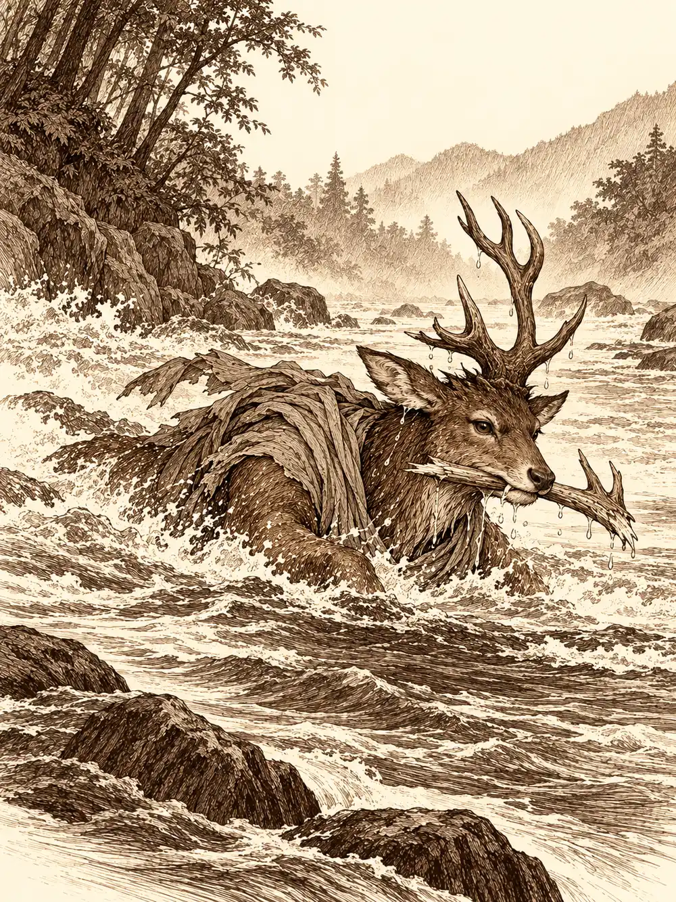

Capítulo 61
Temporada de caza
Libro IV · Los guardianes del Oeste y del Este
El primer rayo cruzó el camino antes de que nadie hubiera terminado de desenvainar.
Llevaban días oyendo rumores de sectarios por los alrededores de Hakara, y cuando siguieron el rastro, a dos o tres horas del pueblo, lo encontraron: dos sectarios de túnica oscura y, junto a ellos, un oni que les sacaba a todos la cabeza y los hombros. Los sectarios no esperaron a presentarse.
Los cuatro cazadores que habían salido aquella mañana habían llegado al norte por motivos distintos. Ikari llevaba semanas practicando su magia, aprendiendo a cambiar la naturaleza de sus hechizos, y su oficio de peletero había mejorado tanto que ya se atrevía con capas y botas que resistieran el fuego o el frío, si encontraba los materiales. Hino Yama seguía con su cruzada contra los demonios y había vuelto al grupo al enterarse de que necesitaban ayuda. Shiru había pasado aquellos días en el pueblo de los aarakocra, llevando madera y víveres y reparando las casas vacías, por si algún día alguien volvía a vivir en ellas. Guxi se dedicaba a la joyería, y a huir de compañeros que le reclamaban un dinero que, según él, solo cobrarían cuando firmaran el contrato.
Hino Yama lanzó una red de telaraña que atrapó a los dos sectarios y luego deshizo uno de sus conjuros en el aire, antes de que llegara a formarse. Guxi desplegó su cañón y, con un gesto, hizo crecer a Shiru hasta que el cervan se volvió una mole de cuernos y músculo. Shiru agarró al oni por la cintura y lo sujetó con fuerza, e intentó hacerle golpear a uno de los suyos. Ikari preparó una bola de fuego, se dio cuenta de que quemaría las telarañas que retenían a los sectarios y, en el último instante, cambió su naturaleza: lo que estalló entre los enemigos fue una bola de trueno. Las telas aguantaron. Los sectarios, no.
El oni cayó poco después. En las bolsas de los muertos había oro, una cantidad generosa, como si lo estuvieran llevando a alguna parte. Se lo repartieron y emprendieron el regreso.
Anochecía cuando les faltaba una hora para llegar a Hakara. El camino era el mismo por el que habían venido, con un puente sobre un río y árboles a los lados. El primero notó un chasquido bajo los pies y saltó a tiempo: una red se cerró en el aire donde había estado su cabeza. Guxi no tuvo tanta suerte. El suelo se hundió y cayó en un pozo lleno de estacas, y se quedó tendido abajo, dolorido y a diez pies de la superficie. Hino Yama pisó algo metálico que hizo clic, se apartó de un salto y una granada pequeña estalló a su lado con una ráfaga de aire. Shiru tropezó con otra mina y la metralla le arañó el costado.
Desde lo alto de una colina cercana llegó una risa.
Sonó un disparo. Shiru sintió el golpe antes de oír el estampido. Arriba, entre las rocas, un hombre que hasta entonces había sido invisible se hizo visible mientras volvía a cargar un arma larga, una especie de cañón de mano. Iba vestido para cazar.
A Shiru se le erizó todo el pelo del cuerpo.
No lo recordaba con claridad. Pero lo conocía. Lo supo en el estómago, en la espalda, en la forma en que se le cerró la garganta. El hombre lo señaló con la mano libre y Shiru sintió que algo se le pegaba a la piel, una marca invisible. Ya no podría esconderse de él.
Se llevó la mano a la cabeza. Uno de sus cuernos estaba en el suelo, a sus pies, partido por el disparo.
Shiru se puso a cuatro patas, recogió el cuerno con la boca y echó a correr. No pensó adónde. Corrió hasta el río y se lanzó al agua, y siguió corriendo y nadando como corre un animal que ha olido al depredador.
Los demás tuvieron que pelear en un terreno escogido para que no pudieran acercarse. Ikari se metió en el pozo junto a Guxi para cubrirse de los disparos, y desde allí abrió un remolino de magia que sacó al artífice del agujero y lo dejó al otro lado del río. Luego llamó a su perro de sombras junto a la colina del tirador. Guxi lo hizo crecer para que acosara al hombre con más fuerza. Hino Yama le lanzó fuego, procurando no alcanzar a sus compañeros, y probó otras magias.
El cazador se movía con un gancho. Lo lanzaba, se enganchaba a una rama o a una roca y cruzaba el campo de un tirón, como una araña. Disparó contra los que se refugiaban en el pozo con una bala que estalló al tocar tierra. Cada paso que daban los compañeros podía pisar otra trampa, y cada trampa les costaba tiempo. A él no le interesaban demasiado. Iba a por el cervan.
Lo alcanzó en la orilla. El gancho se clavó a su lado, el hombre llegó volando y le hundió una daga en el costado.
"Por fin te encuentro. Por fin podremos acabar con esto".
Luego trató de arrancarle el cuerno de la boca. Shiru tiró con todas sus fuerzas.
"¡Es mío! ¡Vete de aquí! ¡Déjame vivir en paz!".
Recuperó el cuerno y se escabulló. El cazador se quedó mirándolo.
"Te pillaré, cervatillo".
Guxi lo empujó al río con un disparo de su balista, un golpe que lo levantó del suelo y lo dejó caer en el agua. La corriente lo arrastró un trecho. No bastó. El perro de sombras corrió hacia él por la orilla, pisó una mina, la mina estalló y el perro desapareció.

El cazador salió del agua, apuntó el gancho y lo lanzó otra vez. Se enganchó a la pierna de Shiru y el hombre llegó a su lado de un tirón. Esta vez, cuando agarró el cuerno, el cervan no tuvo fuerzas para retenerlo.
El hombre se lo guardó, se acercó a la cara de Shiru y sonrió.
"Nos volveremos a ver, muchacho".
Se metió corriendo entre los árboles. Shiru lanzó un golpe al aire que no alcanzó a nadie.
Les costó salir de allí. Alguien invocó una mano mágica que iba palpando el suelo delante de ellos; Guxi disparaba con su ballesta a cada sospecha, y las trampas saltaban una tras otra, una red, un pozo, una mina. Un pequeño constructo de Guxi cayó en uno de los pozos de estacas. Shiru se quedó escondido detrás de un árbol hasta que todo estuvo limpio, tiritando.
Cuando lo encontraron, alguien lo sacudió por los hombros. Shiru señaló el hueco donde antes estaba su cuerno.
"No me salen las palabras".
Le dijeron que no pasaba nada, que con un poco más lo habrían derribado entre todos. Shiru negó con la cabeza.
"Lleva persiguiéndome prácticamente desde que tengo raciocinio".
Entonces era más débil, le dijeron. Ahora era fuerte y tenía compañeros. Shiru les contó que ya entonces era fuerte, que recordaba haber huido de aquel hombre lanzándole barriles, troncos, árboles enteros, y que nunca había servido de nada. Que aquel gancho era terrorífico. Que se había llevado uno de sus cuernos.
"Esto significa que no estoy a salvo en ningún sitio. ¿Cómo voy a proteger a nadie? ¿Cómo voy a comer tranquilo?".
Alguien le puso en las manos la botella de sake de Ikari y le dijo que bebiera y se callara. Otro, con menos paciencia, le dijo que podía quedarse llorando en un matorral o venirse. También le propusieron otra cosa: que dejara de huir. Que se convirtiera él en el cazador del cazador. Shiru lo miró como si le hubieran pedido que volara. Le dijeron que el miedo era el arma principal de aquel hombre contra él, que no tenía que dejarle usarla. Tardó en levantarse.
Hicieron la última hora de camino hasta Hakara sin más sobresaltos. Shiru iba en medio, con el pelo erizado, las orejas tiesas, mirando a los lados a cada paso como un animal que pace en campo abierto.
En el pueblo, Guxi fue derecho a la joyería. El joyero lo recibió con curiosidad cuando Guxi le pidió que le enseñara el oficio, y quiso ver antes lo que sabía hacer. El artífice compró en otra tienda lo que le faltaba, se sentó a la mesa del joyero y trabajó con mucho cuidado. La pieza se le estropeó entre los dedos y los materiales se perdieron. El joyero le dijo que algo se le daba bien, aunque no se viera todavía, y que le avisaría cuando tuviera trabajos en los que pudiera ayudar. Guxi salió de la tienda convencido de que tenía maestro.
En la plaza, una mujer con un gorro y una bolsa de cartas cruzaba corriendo junto a la fuente. Se paró en seco delante de ellos, los miró uno por uno, se fijó en el tanuki, en el mago de escamas y, por último, en Shiru.
"¿Tú eres Shiru? Me dijeron que buscara a un ciervo, y tú tienes un solo cuerno, así que debes de ser tú".
Venía de Sho. Había tenido que tomar un barco, porque el bosque estaba lleno de yokai, y llevaba toda la mañana buscándolo por Hakara; la habían mandado por un camino equivocado y había tenido que volver. Se apoyó en la cabeza de Ikari para recuperar el aliento, le dio la carta a Shiru, saludó en nombre del correo de Kuroto y salió corriendo.
La carta empezaba: Querido Shiru, soy Aiko, la de la panadería. Le contaba que le habían llegado noticias de la propaganda que había hecho de su pan por todo Kuroto, incluso allí arriba, en el norte, y que habían llegado a su tienda algunos ricos de Hakara a comprar. Como agradecimiento, le decía, la mensajera le entregaría también un paquete con un regalo. Esperaba que le gustara.
No había paquete. Shiru buscó por todas partes. Estaba a punto de decidir que se lo habían robado cuando la mensajera volvió a aparecer a toda velocidad, con una caja grande entre los brazos y la cara roja de vergüenza.
"¡Perdón, perdón! ¡Se me había olvidado! Por favor, no hablen mal del correo de Kuroto".
Se inclinó hasta casi tocar el suelo con la frente y se marchó corriendo otra vez.
Shiru abrió la caja despacio, por si acaso. Dentro, entre un relleno de virutas, había un rodillo de amasar pan. Uno enorme, del tamaño de un brazo.
Hino Yama notó enseguida que tenía magia. Lo examinaron entre todos. Era indestructible, y se manejaba con las dos manos como una maza; golpeaba con una fuerza que ninguna herramienta de cocina debería tener. Y había algo más en él, algo que encajaba con la forma de luchar de Shiru. Al empezar una pelea, quien lo empuñara podía moverse antes que nadie a donde quisiera. Y durante un rato, cuando Shiru desviaba un golpe hacia otro enemigo, el que lo recibía podía enfurecerse y devolvérselo al primero.
Shiru lo levantó con las dos manos y lo sostuvo un momento a la altura de los ojos. Pesaba lo justo. Olía, muy levemente, a harina y a horno. Por primera vez en todo el día se le aflojaron un poco los hombros, aunque siguió mirando de reojo hacia los árboles del camino por el que habían venido.